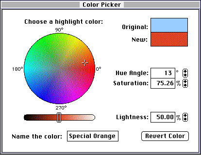

Using Customized Dialog Boxes for Color Pickers
Instead of using thePickColorfunction, your application can use the low-level Color Picker Manager functions to create a tighter integration between your application and the dialog box for color pickers. For example, your application can create a floating palette instead of a modal dialog box. When using the low-level Color Picker Manager functions, your application specifies the type of dialog box in which to put the color picker, and your application maintains tighter control over the event loop.Your application can use the low-level calls to create three additional types of color picker dialog boxes: system-owned, application-owned, and color picker-owned.
A system-owned dialog box for color pickers has the same dialog box items as the dialog box created by
PickColor--that is, it has OK, Cancel, and More Choices buttons. However, with the low-level calls, you can make the dialog box a movable modal or modeless dialog box.Application-owned dialog boxes are supplied by applications. You can use this type of dialog box to integrate color pickers with other window features of your application or to extend the controls for color pickers. For example, you could add controls that allow the user to alter the style of an object as well as its color.
A color picker-owned dialog box is created by the color picker itself. Creating its own dialog box gives a color picker the flexibility of specifying the size and shape of the color picker (color pickers in system-owned and application-owned dialog boxes are always the same size). This is useful for implementing color pickers in floating palettes.
Once they're created, your application interacts with all three types of dialog boxes in the same way. The rest of this section describes how to create each type of dialog box and then discusses how your application interacts with the color picker displayed in the dialog box, no matter what type of dialog box you've used.
Creating Dialog Boxes for Color Pickers
The following list describes common steps your application takes in creating each of the three types of color picker dialogs. Where page numbers are given for the structures and functions involved, see Advanced Color Imaging Reference. Your applicationWhen creating a system-owned dialog box, your application uses combinations of the
- Creates a structure describing the dialog box and your application's Edit menu. For a system-owned dialog box, you use a
SystemDialogInfostructure (page 2-23); for an application-owned dialog box, you use anApplicationDialogInfostructure (page 2-25); for a color picker-owned dialog box, you use aPickerDialogInfostructure (page 2-24).- Uses the
SetPickerColorfunction (page 2-46) to set the original and new colors for the color picker.- Uses the
SetPickerPromptfunction (page 2-41) to specify a text string prompting the user to choose a color for a particular use (for example, "Choose a highlight color").- Uses--for an application-owned dialog box--the
AddPickerToDialogfunction (page 2-39) to add a color picker to your application's dialog box.- Makes the dialog box visible (if your application initially created it as invisible) with the
SetPickerVisibilityfunction (page 2-40) and, for an application-owned dialog box, with the Window Manager functionShowWindow(described in the chapter "Window Manager" in Inside Macintosh: Macintosh Toolbox Essentials.)DialogIsModalandDialogIsMoveableflags in theflagsfield of aSystemDialogInfostructure (page 2-23) to specify whether the dialog box is modal, movable modal, or modeless. (You should always set one or both flags, because your application should never display a nonmovable, modeless dialog.)Listing 2-4 illustrates how to create the movable modal system-owned dialog box shown in Figure 2-3.
Listing 2-4 Creating a movable modal system-owned dialog box
OSErr MyBuildMovableModalSysDialog(void) { SystemDialogInfo sInfo; OSErr result; sInfo.flags = DialogIsMoveable + AppIsColorSyncAware + CanModifyPalette + CanAnimatePalette; sInfo.pickerType = 0L; sInfo.placeWhere = kDeepestColorScreen; sInfo.mInfo.editMenuID = kMyEditMenuID; sInfo.mInfo.cutItem = kMyCutItem; sInfo.mInfo.copyItem = kMyCopyItem; sInfo.mInfo.pasteItem = kMyPasteItem; sInfo.mInfo.clearItem = kMyClearItem; sInfo.mInfo.undoItem = kMyUndoItem; gMyPicker = nil; result = CreateColorDialog(&sInfo, &gMyPicker); if(result == noErr && gMyPicker != nil) { PMColor myPMColor; myPMColor.color.rgb = gMyRGBColor; myPMColor.profile = 0L; SetPickerColor(gMyPicker, kOriginalColor, &myPMColor); SetPickerColor(gMyPicker, kNewColor, &myPMColor); SetPickerPrompt(gMyPicker, "\pChoose a highlight color:"); SetPickerVisibility(gMyPicker, true); } return result; }Before displaying the dialog box, your application must use theSetPickerColorfunction to specify colors for the user to start with. Setting these original and new colors is described in "Setting Colors for and Getting Colors From the Color Picker" (page 2-18).Listing 2-5 shows how to use the Dialog Manager function
GetNewDialogto create an application-owned dialog box. (See the chapter "Dialog Manager" in Inside Macintosh: Macintosh Toolbox Essentials for information on theGetNewDialogfunction.) To use this dialog box for a color picker, your application needs to create anApplicationDialogInfostructure and then call theAddPickerToDialogfunction, as shown in this example.Listing 2-5 Creating an application-owned dialog box
OSErr MyBuildAppDialog(void) { ApplicationDialogInfo aInfo; OSErr result; /* create the dialog box, but ensure it's color */ gMyDialog = GetNewDialog(kMyDialogID, nil, (WindowPtr)-1); /* set up the ApplicationDialogInfo structure */ aInfo.flags = DialogIsMoveable + AppIsColorSyncAware + CanModifyPalette + CanAnimatePalette; aInfo.pickerType = 0L; aInfo.theDialog = gMyDialog; /* put the color picker's origin at (0,0) in the dialog box */ aInfo.pickerOrigin.h = 0; aInfo.pickerOrigin.v = 0; /* report Edit menu information */ aInfo.mInfo.editMenuID = kMyEditMenuID; aInfo.mInfo.cutItem = kMyCutItem; aInfo.mInfo.copyItem = kMyCopyItem; aInfo.mInfo.pasteItem = kMyPasteItem; aInfo.mInfo.clearItem = kMyClearItem; aInfo.mInfo.undoItem = kMyUndoItem; /* add the color picker to the dialog box */ result = AddPickerToDialog(&aInfo, &gMyPicker); if(result == noErr && gMyPicker != nil) { PMColor myPMColor; myPMColor.color.rgb = gMyRGBColor; myPMColor.profile = 0L; SetPickerColor(gMyPicker, kOriginalColor, &myPMColor); SetPickerColor(gMyPicker, kNewColor, &myPMColor); SetPickerPrompt(gMyPicker, "\pChoose a hightlight color"); SetPickerVisibility(gMyPicker, true); ShowWindow(gMyDialog); DrawDialog(gMyDialog); } else MyDoError(result); return result; }Figure 2-4 shows the application-owned dialog box created by Listing 2-5. Notice the difference between the buttons in this dialog box and those in the system-owned dialog box shown in Figure 2-3.Figure 2-4 A movable modal application-owned dialog box

Listing 2-6 shows how use aPickerDialogInfostructure and theCreatePickerDialogfunction to create a color picker-owned dialog box.Listing 2-6 Creating a color picker-owned dialog box
OSErr BuildPickerDialog(void) { PickerDialogInfo pInfo; OSErr result; pInfo.flags = DialogIsMoveable + AppIsColorSyncAware + CanModifyPalette + CanAnimatePalette; pInfo.pickerType = 0L; pInfo.mInfo.editMenuID = kMyEditMenuID; pInfo.mInfo.cutItem = kMyCutItem; pInfo.mInfo.copyItem = kMyCopyItem; pInfo.mInfo.pasteItem = kMyPasteItem; pInfo.mInfo.clearItem = kMyClearItem; pInfo.mInfo.undoItem = kMyUndoItem; gMyPicker = nil; result = CreatePickerDialog(&pInfo, &gMyPicker); if(result == noErr && gMyPicker != nil) { PMColor myPMColor; myPMColor.color.rgb = gMyRGBColor; myPMColor.profile = 0L; SetPickerColor(gMyPicker, kOriginalColor, &myPMColor); SetPickerColor(gMyPicker, kNewColor, &myPMColor); SetPickerPrompt(gMyPicker, "\pChoose a highlight color:"); SetPickerVisibility(gMyPicker, true); } else MyDoError(result); return result; }As you can see from Listing 2-4, Listing 2-5, and Listing 2-6, the code to create all three types of dialog boxes is very similar. As you will see in the next few sections, the code to manage them is also very similar.Setting Colors for and Getting Colors From the Color Picker
Your application uses a color picker to present color choices to the user and to determine which color the user selects.Most color pickers present controls that identify color choices. In any case, your application must initially set two default colors: an original color and a new color. The original color is the color that the user is about to change, and the new color is the color to which the user changes the original. For custom color picker dialog boxes, you use the
SetPickerColorfunction to set both colors. (When your application uses thePickColorfunction to display the standard dialog box, your application supplies the original color in the fieldtheColorof the color picker parameter block. This color is used as the initial value for both the original color and the new color.)Although the new colors selected by the user may vary widely, the original color remains fixed for comparison. Figure 2-3 shows how a system-owned dialog box displays both the original and the new colors.
Suppose, for example, that your paint program uses a floating palette for a color picker. When the user clicks an object, you want the floating palette to show the color of that object. You accomplish this by initially setting the object's current color as both the original color and the new color. As the user changes the color of the object, the original color remains the same while the new color changes. This provides feedback as to what would happen if the user were to undo the color change.
Listing 2-7 illustrates how to use the
SetPickerColorfunction to set the original and new colors.Listing 2-7 Setting the original and new colors
void MySetPickerToColor(RGBColor *rgb) { PMColor aColor; aColor.color.rgb = *rgb; aColor.profile = 0L; SetPickerColor(myPicker, kOriginalColor, &aColor); SetPickerColor(myPicker, kNewColor, &aColor); }Whenever the user changes the current color, you need to be able to get the new color so that you can update your object accordingly. To determine what color the user is selecting, use theGetPickerColorfunction, as illustrated in Listing 2-8. (Use theGetPickerColorfunction for getting colors from color pickers in custom dialog boxes. When your application uses thePickColorfunction to display the standard dialog box, and the user clicks the OK button, the Color Picker Manager returns the new color in the fieldtheColorof the color picker parameter block.)Listing 2-8 Determining the selected color
void MyGetCurrentColor(RGBColor *rgb) { PMColor aColor; GetPickerColor(myPicker, kNewColor, &aColor); *rgb = aColor.color.rgb; }As shown in Listing 2-3 (page 2-11), you might want to use the colors provided by your color-changed function as temporary colors only. Accordingly, your application should not update its internal data until the user has actually chosen a color (or at least stopped dragging a control). Your application will know this happens when theDoPickerEventfunction, which is described in "Handling Events in a Color Picker Dialog Box" (page 2-20), returns thekColorChangedconstant. Your application should then update its internal data.As you can see, setting colors for and getting colors from a color picker are simple tasks to perform; complexities arise only if you need to convert a color returned by the color picker from one color space to another. For example, a color picker might return a color using the CMYK color space; if your application uses only RGB colors, then your application must convert the color between the two spaces. See "Converting Colors Among Color Models" (page 2-52) in Advanced Color Imaging Reference for information about converting between RGB colors and other color types.
When the
AppIsColorSyncAwareflag is not set in theSystemDialogInfo,ApplicationDialogInfo, orPickerDialogInfostructure used to create a dialog box, the Color Picker Manager automatically converts any color it gets back from a color picker into an RGB color.Handling Events in a Color Picker Dialog Box
When your application receives an event for a color picker dialog box, you use theDoPickerEventfunction to pass the event to the Color Picker Manager. The color picker or the Color Picker Manager either handles the event or returns it to your application for handling.When your application uses the
DoPickerEventfunction to pass an event to a color picker or the Color Picker Manager for handling, you use anEventDatastructure to supply information about the event, and to receive information about how the color picker or the Color Picker Manager handled the event. (TheDoPickerEventfunction and theEventDatastructure are described in detail in "Color Picker Manager Reference" (page 2-5) in Advanced Color Imaging Reference.)When either the color picker or the Color Picker Manager handles the event, the
DoPickerEventfunction returns in theactionfield of theEventDatastructure one of the following constants describing the event. (These constants are described in "Picker Actions" (page 2-5) in Advanced Color Imaging Reference.)enum PickerAction { kDidNothing, /* no action worth reporting */ kColorChanged, /* user chose a different color */ kOkHit, /* user clicked OK */ kCancelHit, /* user clicked Cancel */ kNewPickerChosen, /* user chose a new color picker */ kApplItemHit /* Dialog Manager returned an item in an application-owned dialog box */ }; typedef short PickerAction;Internally, the Color Picker Manager handles the event by calling the Dialog Manager functionDialogSelectand then processing the event from there. If the color picker is in an application-owned dialog box and an application item is selected, the Color Picker Manager returns thekApplItemHitconstant as well as the number of the selected item.If your application creates a modeless dialog box for a color picker, you must handle events related to its menus before calling the
DoPickerEventfunction. If you've created a modal system-owned dialog box, the Color Picker Manager can handle the Edit menu events for you (as it does when you callPickColor). However, for other dialog boxes there may be menu items that the Color Picker Manager cannot handle. If you send events relating to these menu items to the Color Picker Manager, it will assume all Edit menu selections are meant for the color picker and will ignore every other menu selection. "Handling Events in the Edit Menu" (page 2-23) describes how to handle the Edit menu.Listing 2-9 illustrates an event loop. This example assumes that the application always handles events related to its menus.
Listing 2-9 A sample event loop
#define IsMenuKey(x) (x)->what == keyDown && (x)->modifiers & cmdKey) Boolean MySampleDoEvent(EventRecord *event) { Boolean handled = false, isMenuEvent = false; EventData pEvent; short inWhere; WindowPtr whichWindow; if (event->what == mouseDown) { inWhere = FindWindow(event->where, &whichWindow); if (inWhere == inMenuBar) isMenuEvent = true; } if (isMenuEvent || IsMenuKey(event)) { DoMenu(event); handled = true; } /* if the event's not handled yet, pass it to the Color Picker Manager */ if (!handled) { pEvent.event = event; pEvent.colorProc = MyColorChangedProc; pEvent.colorProcData = 0L; DoPickerEvent(myPicker, &pEvent); handled = pEvent.handled; /* if the color picker handled it, do something with the results */ if (handled) { switch (pEvent.action) { case kDidNothing: break; case kColorChanged: UseNewColor(myPicker); break; case kOKHit: UseNewColor(myPicker); DisposeColorPicker(myPicker); myPicker = nil; break; case kCancelHit: UseOriginalColor(myPicker); DisposeColorPicker(myPicker); myPicker = nil; break; case kNewPickerChosen: /* nothing to do for this case */ break; case kApplItemHit: /* let my app handle the item */ MyHandleAppItem(pEvent.itemHit); break; } } if (!handled) { /* the event hasn't been handled; treat it like any normal Macintosh event; if any other dialog boxes are present, call DialogSelect here; if the event is a mouseDown event, my app already called FindWindow */ } return handled; }As shown in this example, if you use a color-changed function (such as the one illustrated in Listing 2-3), you should supply it, along with any data it needs, in theEventDatastructure that your application passes to theDoPickerEventfunction.Handling Events in the Edit Menu
Handling events in the Edit menu requires more work than standard menu processing. If an Edit menu choice is for the color picker, you need to set the state of the Edit menu items according to the color picker specifications and, if a menu item is chosen, send the appropriate message to the color picker. To do so, you use two functions,GetPickerEditMenuStateandDoPickerEdit.After you determine that there has been a mouse-down event in the Edit menu (or that the user pressed a keyboard equivalent), you need to determine who owns the Edit menu.
If the color picker is in a color picker-owned or system-owned dialog box and it's the frontmost window, the color picker owns it. If the color picker is in an application-owned dialog box and it's frontmost, ownership of the Edit menu depends on the current dialog item. The choice really depends on your application. As a general rule, whoever owns the current item owns the Edit menu. If your application uses the
DoPickerEditfunction while the current item belongs to your application,DoPickerEditimplements the standard cut, copy, paste, and clear features for your application. If your application needs to do more than this, it needs to handle the menu itself.Listing 2-10 assumes that the owner of the current item owns the Edit menu. The item number for the application's last dialog item is represented by the constant
kMyLastItem. If your application has a system-owned or color picker-owned dialog box, this constant should be set to 0. In an application-owned dialog box, the color picker's items will always be added after your application's, so your item numbers remain the same.Listing 2-10 Handling the Edit menu
Boolean MyDoMenu(EventRecord *event) { long mChoice; EditData eData; EditOperation eOperation; /* if the picker is in front and the current edit item is the picker's, set up the Edit menu as the picker wants it */ if (FrontWindow() == gMyDialog && ((DialogPeek)gMyDialog)->editField + 1 > kMyLastItem) { MenuState mState; MenuHandle theMenu; GetPickerEditMenuState(myPicker, &mState); theMenu = GetMenu(kMyEditMenuID); if (mState.cutEnabled) EnableItem(theMenu, kMyCutItem); else DisableItem(theMenu, kMyCutItem); if (mState.copyEnabled) EnableItem(theMenu, kMyCopyItem); else DisableItem(theMenu, kMyCopyItem); if (mState.pasteEnabled) EnableItem(theMenu, kMyPasteItem); else DisableItem(theMenu, kMyPasteItem); if( mState.clearEnabled) EnableItem(theMenu, kMyClearItem); else DisableItem(theMenu, kMyClearItem); if (mState.undoEnabled) { SetItem(theMenu, kMyUndoItem, mState.undoString); EnableItem(theMenu, kMyUndoItem); } else DisableItem(theMenu, kMyUndoItem); } /* pass the event to the Menu Manager */ if (event->what == mouseDown) mChoice = MenuSelect(event->where); else if (event-> == keyDown) mChoice = MenuKey(event->message); /* if not the Edit menu, handle normally */ if (HiWord(mChoice) != kMyEditMenuID) { HandleMenuChoice(mChoice); return true; } switch (LoWord(mChoice)) { case kMyCutItem: eOperation = kCut; break; case kMyCopyItem: eOperation = kCopy; break; case kMyPasteItem: eOperation = kPaste; break; case kMyClearItem: eOperation = kClear; break; case kMyUndoItem: eOperation = kUndo; break; default: eOperation = -1; break; } if (eOperation >= 0) { eData.theEdit = eOperation; DoPickerEdit(myPicker, &eData); /* this example is simply ignoring the results here */ } HiliteMenu(0); return true; }See the chapter "Menu Manager" in Inside Macintosh: Macintosh Toolbox Essentials for more information about managing menus in your application.Sending Event Forecasters to the Color Picker
Your application may sometimes need to warn the color picker about a user action that might affect it. For example, if you display a color picker in an application-owned dialog box and the user closes that dialog box, your application might want to check whether the color picker is in a state that can handle this. If the user had just typed some numbers into the color picker that left it in an inconsistent state, it would be helpful if the color picker could warn the user before the user closes it.Your application can warn the color picker about potential problems by sending it event forecasters. Event forecasters aren't events in themselves; instead, they are warnings to the color picker. To send event forecasters to the color picker, you use the same function as for regular events--
DoPickerEvent--except that in theEventDatastructure that your application passes toDoPickerEvent, your application sets theeventfield toniland sets theforcastfield to an appropriate constant from the following list.enum EventForcasters { kNoForcast, /* no forecast (e.g., an update event) */ kMenuChoice, /* this event causes a menu to be chosen */ kDialogAccept, /* the dialog box will be accepted */ kDialogCancel, /* the dialog box will be canceled */ kLeaveFocus, /* the focus will leave the color picker */ kPickerSwitch, /* new color picker chosen in More Choices list */ kNormalKeyDown,/* a normal key-down event in an edit field */ kNormalMouseDown/* a normal click in color picker's focus */ }; typedef short EventForcaster;The color picker informs your application about whether the color picker is ready for the action to occur by setting thehandledfield of theEventDatastructure totrueif it's not ready andfalseif it is.Generally, the only time you need to use event forecasters is when the color picker's dialog box is about to close. If the Color Picker Manager affects the closing (as indicated when it sets the
actionfield of theEventDatastructure to thekOKHitconstant after your application callsDoPickerEvent), your application doesn't need to warn the color picker because the Color Picker Manager has already done so. However, if the user has just clicked the close box of a window containing an application-owned dialog box or has chosen Close from a menu, you should send an event forecaster to the color picker.Listing 2-11 shows an application-defined function called
CheckIfPickerCanClose. If this function returns true, then the color picker can close; otherwise, it can't close for some reason, and you can assume that the color picker has informed the user of the problem.Listing 2-11 Warning the color picker that it's about to be closed
Boolean MyCheckIfPickerCanClose() { EventData pEvent; pEvent.event = 0L; /* make it a forecast event */ pEvent.forecast = kDialogAccept; DoPickerEvent(myPicker, &pEvent); return !pEvent.handled; }Setting the Destination Profile
If you use a color picker to ask the user for a color intended for an output device, and the device has a color-matching profile, your application can hand this profile to the color picker so that it can communicate the profile's information to the user. You do this with theSetPickerProfilefunction, as illustrated in Listing 2-12. Setting a destination profile is optional; the color picker assumes that there's no profile unless your application usesSetPickerProfileto set one.Listing 2-12 Using the
SetPickerProfilefunction to set the destination profilevoid MySetDestinationProfile(CMProfileHandle profile) { if (SetPickerProfile(myPicker, profile) != noErr) MyHandleError(); }There's also a matching function,GetPickerProfile, illustrated in Listing 2-13, to get the current destination profile from the color picker.Listing 2-13 Using the
GetPickerProfilefunction to get the destination profilevoid MyGetDestinationProfile(CMProfileHandle profile) { if (GetPickerProfile(myPicker, profile) != noErr) MyHandleError(); }Your application owns the memory of any profiles it gives to or receives from the color picker. When your application sets the destination profile, the color picker makes a copy of the profile handle; when your application gets the destination profile, your application gives the color picker a handle into which it copies the profile data.